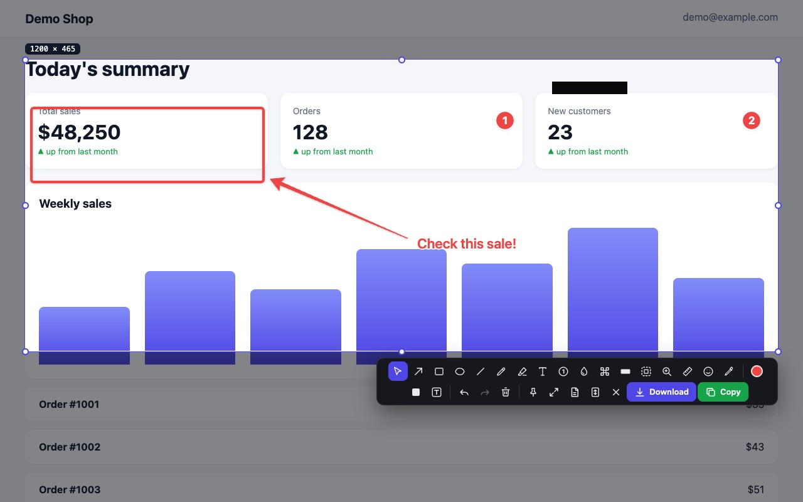
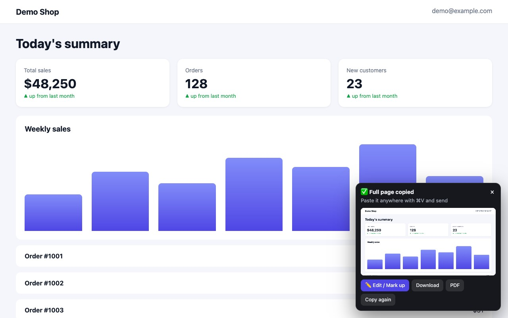
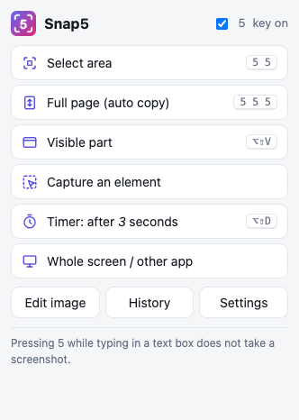
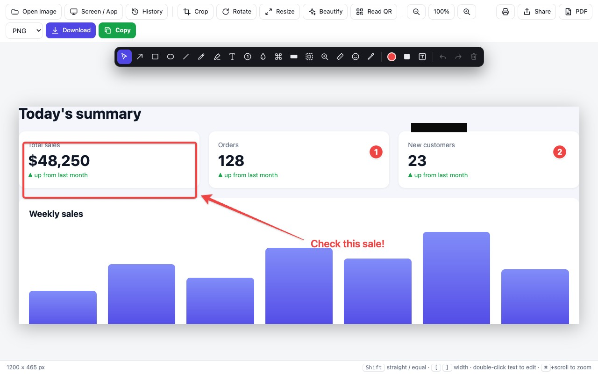
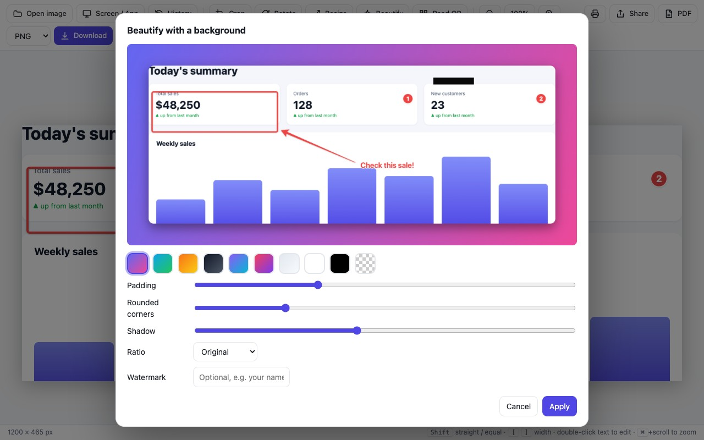
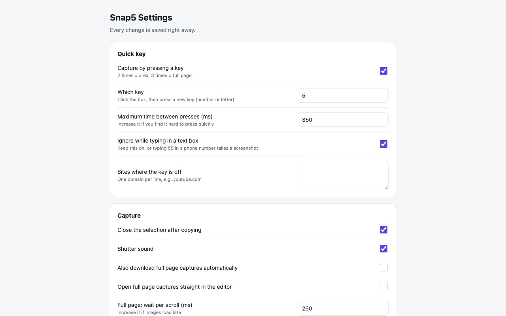

A fast screenshot and markup extension for Google Chrome. User guide for MacBook, version 1.0.0.
5 5Press 5 twice quickly: select an area, mark it up, then copy or download.
5 5 5Press 5 three times quickly: the whole page is captured and copied.
1. Install on your Mac (one time)
Get the folder. Download Snap5-1.0.0.zip from github.com/leoarafat/snap5/releases and double-click it to unzip. You get a folder named Snap5. Move it somewhere permanent, such as Documents.
Open Google Chrome, type chrome://extensions in the address bar and press Return.
Turn on Developer mode (switch at the top right).
Click Load unpacked (top left).
Choose the Snap5 folder (the one that contains manifest.json) and click Select.
Click the puzzle-piece icon next to the address bar, then click the pin beside Snap5.
Do not delete or move the folder after installing. Chrome runs the extension directly from it. If you move it, load it again from the new place.
Test it
Open any website. Click once on an empty part of the page, then press 55. The screen dims and you can select. Press Esc to leave. If a tab that was already open does not respond, reload it with ⌘R.
Optional settings
If you want to
Do this
Check or change the ⌥⇧ shortcuts
Open chrome://extensions/shortcuts
Use Snap5 on files opened from your Mac (file://)
chrome://extensions → Snap5 → Details → turn on Allow access to file URLs
Use it in Incognito
Same Details page → Allow in Incognito
Capture other Mac apps
System Settings → Privacy & Security → Screen & System Audio Recording → turn on Google Chrome, then restart Chrome
2. Capture a selected area: 5 5
Press 5 twice quickly. The page freezes, so open menus stay in the picture.
Drag over the area, or click once to grab the box, picture or section under the pointer.
Adjust with the round handles. Arrow keys move the selection; Shift + arrows resize it.
Mark it up with the toolbar if you like.
Press Return (or double-click, or click Copy), then paste with ⌘V in WhatsApp, Messenger, email, Slack or any document. Press ⌘S to download.

A selected area with a box, arrow, text, step numbers and a black-out bar.
Before selecting: Return selects the whole screen, F captures the full page, and C copies the color code under the pointer.
3. Markup tools
Key
Tool
Key
Tool
V
Move or resize a mark
B
Blur
A
Arrow
X
Pixelate
R
Rectangle
K
Black out private information
O
Ellipse
S
Spotlight (dims everything else)
L
Line
M
Magnify
P
Pen
U
Ruler (measures pixels)
H
Highlighter
E
Emoji or sticker
T
Text
I
Color picker
N
Step numbers 1, 2, 3
Color and size: click the colored circle. [ and ] make marks thinner or thicker.
Filled shape:F. Text background:G.
Straight lines, squares and circles: hold Shift while drawing.
Text: click, type, press Return. Shift + Return starts a new line. Press V and double-click text to edit it.
Undo and redo:⌘Z and ⌘⇧Z. Delete removes the selected mark, ⌘D duplicates it.
To hide passwords, phone numbers or account numbers, use Black out (K). Blurred or pixelated text can sometimes be recovered.
Other toolbar buttons
Pin (⌘P): keeps the picture floating on the page so you can compare or copy from it.
Full editor, PDF, Full page and Close. Hover over any button to see its name.
4. Capture the full page: 5 5 5
Press 5 three times quickly.
The page scrolls by itself. The icon badge shows progress. Stay on that tab. Press Esc to cancel.
When the box appears at the bottom right, the picture is already copied. Paste with ⌘V.
The same box lets you Edit / Mark up, Download, save as PDF or Copy again.

The message shown after a full page capture.
Very long chat or social feed pages are captured only as far as they had loaded when the capture started. On ordinary http:// pages Chrome blocks the clipboard, so Snap5 opens its editor tab and copies from there.
5. Toolbar menu and other capture modes
Click the Snap5 icon in Chrome's toolbar:
Select area and Full page
Visible part: what you see now
Capture an element: click one part of the page
Timer: gives you time to open a menu first
Whole screen / other app: pick a screen or window
Edit image, History, Settings
You can also right-click a web page and choose Snap5 screenshot. Right-click a picture and choose Edit this image.
Shortcut (works inside text boxes too)
Action
⌥ Option + ⇧ Shift + S
Select area
⌥⇧F
Full page
⌥⇧V
Visible part
⌥⇧D
Timer

6. The full editor

All markup tools, plus crop, rotate, resize and export.
Open any picture: use Open image, drag a file in, or paste with ⌘V. Pasting onto an open picture adds it as a movable layer.
Crop, Rotate, Resize and Read QR.
Export: Copy, PNG, JPG, WebP, PDF, Print and Share. Zoom with ⌘ + scroll.

Beautify adds a background, rounded corners, shadow and an optional watermark.
7. History and settings
History keeps your recent captures on your Mac. You can edit, copy, download or delete them.

Settings page.
In Settings you can change the trigger key and how fast you must press it, turn the key off on chosen websites, choose the file format, name and folder, turn the shutter sound on or off, and set automatic download.
8. If something does not work
Problem
Solution
55 does nothing
Reload the tab with ⌘R. Click on an empty part of the page first. Check that the key is on in the Snap5 menu.
The cursor is in a text box
This is on purpose, so typing "55" is safe. Use ⌥⇧S or ⌥⇧F.
New Tab, chrome:// pages or Chrome Web Store
Chrome does not let extensions run there. Use the Snap5 icon or a shortcut; the picture opens in the editor.
On YouTube the video jumps when you press 5
The site also uses that key. Use ⌥⇧S, or turn the key off for that site in the Snap5 menu.
It is hard to press fast enough
Settings → increase the time between presses.
Pictures are missing in a full page capture
Settings → increase "wait per scroll".
Other apps cannot be captured
Allow Screen Recording for Chrome (see section 1).
It works only inside Chrome
Correct. This is a Chrome extension. A Mac app would be needed for a system-wide key.
9. Update, remove and privacy
Update: replace the files in the same folder, then click the reload arrow on Snap5 in chrome://extensions.
Remove: click Remove on the same page. This also deletes the history.
Privacy: Snap5 has no account, no analytics and no server. Screenshots are not uploaded anywhere. History is stored inside Chrome on your own computer. Chrome asks for access to all websites because Snap5 must be able to capture whichever page you are on.
Not included: screen video recording and text recognition (OCR).